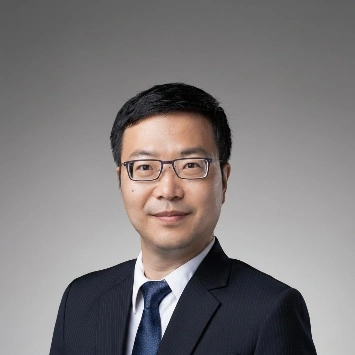
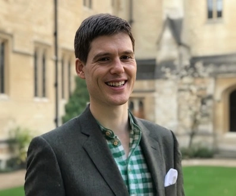
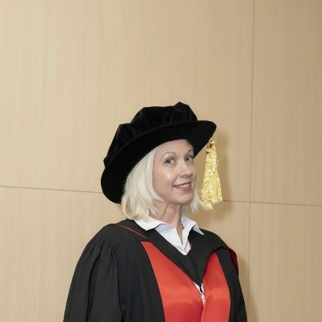
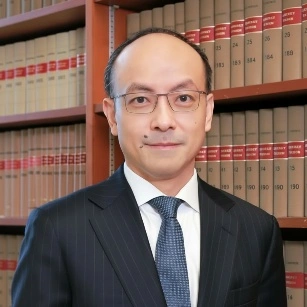

The Symposium features thematic presentations and a panel discussion on the intersection of research integrity and GenAI, which spark reflection, interaction and networking among diverse research stakeholders on the following topics:
| Time | Programme | Speakers |
|---|---|---|
| 9:00am-9:30am | Registration and Welcome Coffee | |
| 9:30am-9:35am | Introduction | Professor Danny CHAN |
| 9:35am-9:55am | Opening address | |
| Welcome speech | TBC | |
| 9:55am-10:00am | Group photo | - |
| 10:00am-10:20am | Professor Xuhua HE | |
| 10:20am-10:40am | - | |
| 10:40am-12:00pm | AI Across Disciplines | Moderator: Professor Joshua HO |
| AI in STEM Research (TBC) | Professor David CLIFTON | |
| AI in Social Sciences and Humanities Research | Professor Liz JACKSON | |
| 12:00pm-1:30pm | Lunch Break | - |
| 1:30pm-2:50pm | AI and Research Integrity Frameworks | Moderator: Dr. Wai Lan TSANG |
| 2:50pm-3:20pm | Responsible Conduct of Research in the AI Era | Moderator: Professor Danny CHAN |
| Conflicts of Interest | Professor Simon YOUNG | |
| Emerging challenges in research data management | Professor Joshua HO | |
| 3:20pm-3:50pm | Coffee | - |
| 3:50pm-5:20pm | Panel Discussion (Implications of non-compliance/questionable practices in the use of AI) | Chair: Professor Joshua HO, Dr. De Ming CHAU, Professor David CLIFTON, Professor Xuhua HE, Professor Liz JACKSON, Dr. Trevor LANE, Professor Simon YOUNG |
| 5:20pm-5:30pm | Concluding remarks | Professor Stephanie MA |

Professor Xuhua He is a Chair Professor in the Department of Mathematics at HKU. He is a distinguished mathematician in the fields of algebraic groups, representation theory, and arithmetic geometry. His numerous accolades include the Morningside Gold Medal of Mathematics (2013), the Xplorer Prize (2020), and the AMS Chevalley Prize in Lie Theory (2022). In 2025, he was elected a Fellow of the Hong Kong Academy of Sciences.

Professor David Clifton is the Royal Academy of Engineering Chair of Clinical Machine Learning at the University of Oxford, and leads the Computational Health Informatics (CHI) Lab which focuses on AI for Healthcare. He is also NIHR Research Professor, appointed as the first non-medical scientist to the NIHR’s “flagship chair”. His research focuses on advancing the development of AI-based methods for healthcare and has been recognized with over 40 awards.

Professor Liz Jackson is the Karen Lo Eugene Chuang Professor in Diversity and Equity and Associate Dean (Research) at the Faculty of Education, HKU. Her research examines the sociology and philosophy of education, with an emphasis on diversity and social justice. She also serves as President of the Comparative Education Society of Hong Kong and as Editor‑in‑Chief of Educational Philosophy and Theory.
Dr. De Ming Chau is a Senior Lecturer in the Department of Biomedical Sciences at Universiti Putra Malaysia, Malaysia. With over a decade of experience leading research integrity workshops for students and academics, he has become a key advocate for ethical research practices. He currently serves as a Governing Board Member of the World Conferences on Research Integrity Foundation and as a member of the National Committee on Research Integrity, Malaysia. Dr. Chau is also the co-founder of the Young Scientists Network-Academy of Sciences Malaysia (YSN-ASM) Responsible Conduct of Research (RCR) Programme and formerly chaired its Science Integrity Working Group. Additionally, he has led the ASEAN RCR Project, promoting responsible research conduct across Southeast Asia.
Dr. Trevor Lane is a Research Development and Impact Specialist at the Faculty of Dentistry, HKU. With extensive experience in scholarly publishing and research communication, he serves as a Trustee of the Committee on Publication Ethics (COPE), and previously served as Council Member. In these roles, he has led educational initiatives on responsible research conduct and publication ethics. He was also a co-author of the Good Publication Practice (GPP) Guid

Professor Simon Young is the Ian Davies Professor in Ethics at the University of Hong Kong (HKU), Faculty of Law. He serves as the Deputy Director of Education and Development for Research Integrity at HKU, demonstrating a significant institutional commitment to responsible conduct of research. A scholar-practitioner, his research examines Hong Kong’s constitutional order, human rights, and anti-money laundering laws. He is also Editor-in-Chief of the Asia-Pacific Journal on Human Rights and the Law and formerly General Editor of Archbold Hong Kong.
Professor Joshua Ho is an Associate Professor and Assistant Dean (Innovation & Technology Transfer) at the LKS Faculty of Medicine, HKU. His research specializes in the computational analysis of single-cell, metagenomic, and digital health data. He serves as a featured speaker at HKU’s Responsible Conductor of Research (RCR) Seminars, specifically advising on best practice for the management of research data and records. Professor Ho is also a significant contributor to the development of the Guidelines on the Responsible Use of Generative AI in Research at HKU.
The University of Hong Kong
The University of Hong Kong
The University of Hong Kong
The University of Hong Kong
The University of Hong Kong